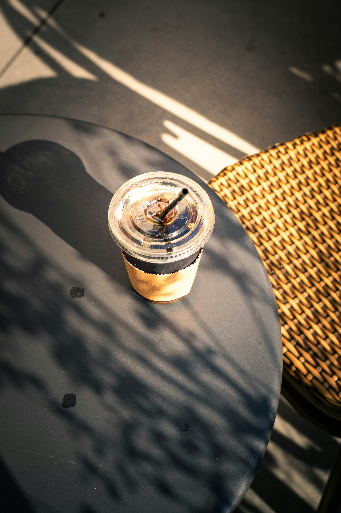
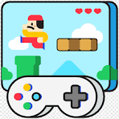

Mi primer proyecto web
Así construí mi primera página desde cero usando HTML, CSS y un toque de JavaScript.
Leer más
Este espacio está dedicado a compartir mis experiencias, aprendizajes y proyectos en el mundo del desarrollo web, la programación y la tecnología.
Mi primer proyecto web
Así construí mi primera página desde cero usando HTML, CSS y un toque de JavaScript.
Leer más
Por qué elegí aprender desarrollo web
Lo que me inspiró a seguir este camino y cómo la programación cambió mi forma de pensar.
Leer más
Lo que me gustaría ver más en programación de videojuegos
Una reflexión sobre el futuro del desarrollo de videojuegos y las oportunidades para nuevos creadores.
Leer más